Fintech · Multi-platform Social
A cross-platform social media system for a fintech serving freelancers, students, and diaspora — designed to build trust, educate users, and move audiences from problem awareness to product intent.
Build and develop a consistent social media presence for PayRafi, focused on reaching target audiences — freelancers, students, and diaspora — building trust and credibility, and educating users about the product. Brand Book and Tone of Voice were provided at the start; I worked alongside a Content Writer responsible for content scenarios and copy.
PayRafi needed communication that built trust, educated users, and supported product adoption across multiple platforms.
Build a communication system that increased awareness, strengthened trust, and guided product adoption.
Communication was designed to solve business problems—not simply produce content.
Rather than assigning each platform to a single funnel objective, I used a shared content framework across Instagram, LinkedIn, and Telegram, then tuned the content mix, publishing frequency, formats, and pillar weight per platform.
A topic could appear on multiple platforms, but its angle and emphasis shifted with the channel's role.
Different platforms served different audiences and different stages of the decision journey.
| Platform | Primary Audience | Role in the Communication Journey |
|---|---|---|
| Freelancers • Students • Diaspora | Awareness | |
| Telegram | Freelancers • Students • Diaspora | Awareness & Education |
| Existing & New Users | Trust |
Rather than repeating the same content across channels, each platform was assigned a specific communication role.
The calendar was more than a publishing schedule. I determined publishing frequency per platform, formats, pillar weight by channel, and the sequencing of content across the audience journey. One recurring journey:
Content moved audiences from problem recognition through guidance, product education, and social proof — planned as a sequence rather than a collection of isolated posts.
The communication journey was built around the questions users needed answered before they could trust the service.
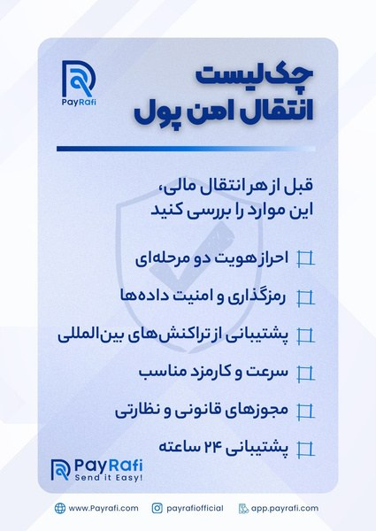
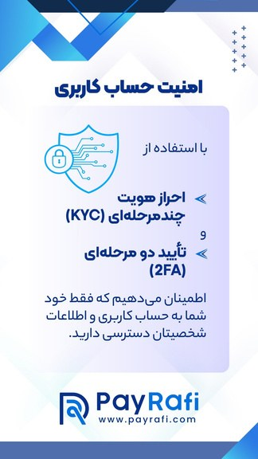
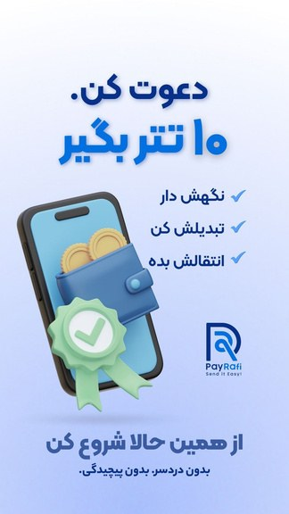
Every answer prepared users for the next decision, bringing them one step closer to trust.
A strategy only creates value when it can be executed consistently.
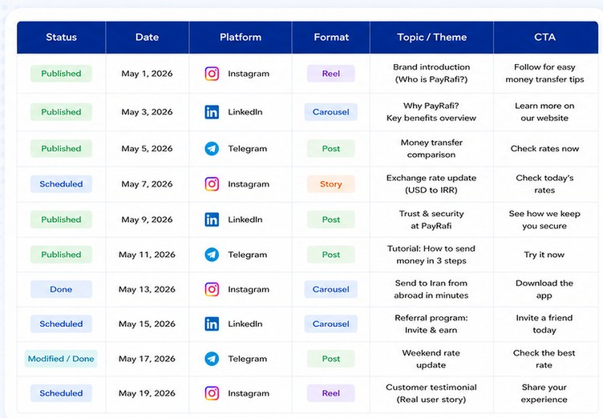
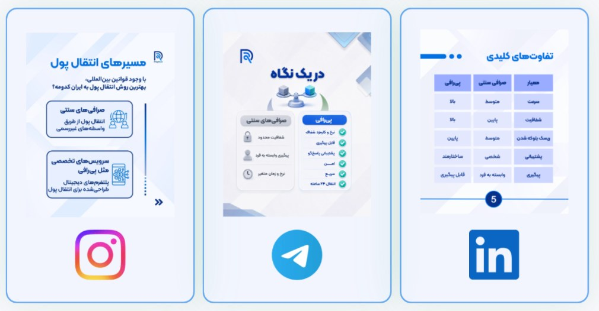
Every piece of content had a strategic purpose.
Working within the existing Brand Book, I translated the identity into a consistent social media visual system: posts, carousels, stories, app walkthroughs, campaign assets, and cross-platform variants. The gallery below samples work across all three channels.
I designed a cross-platform KPI framework structured across three levels: Distribution → Engagement → Intent. Platform-specific metrics were then selected based on each channel's behavior.
Performance data was used to generate actionable insights, not just reporting.
Analysis indicated videos needed to be shorter.
Insight → Action: reduce the length of subsequent video content.
Approximately 90% of reach came from non-followers, while 70% of engagement came from followers.
Distribution was successfully exposing PayRafi to new audiences, but new viewers weren't progressing into engagement at the same rate — suggesting a potential gap in progression toward deeper consideration.
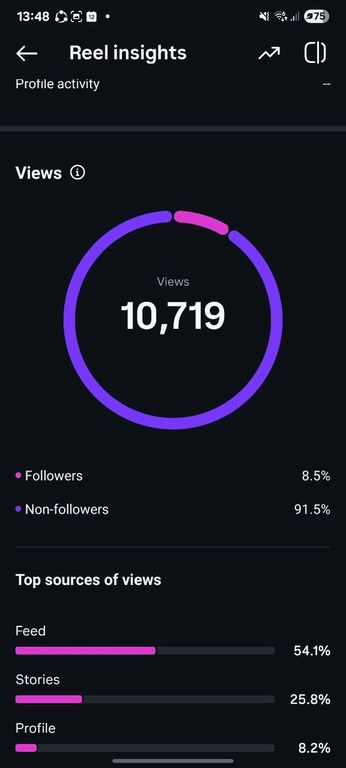
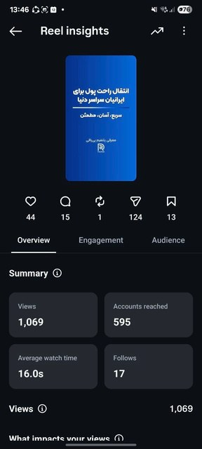
Collaborations expanded reach beyond the existing audience.
Clear service education encouraged shares, profile visits, and follows.
Use relevant collaborations to support discovery.
Turn high-interest service topics into clear explainers with one focused CTA.
Performance insights informed the next content priorities.
Selected Assets · Instagram · LinkedIn · Telegram
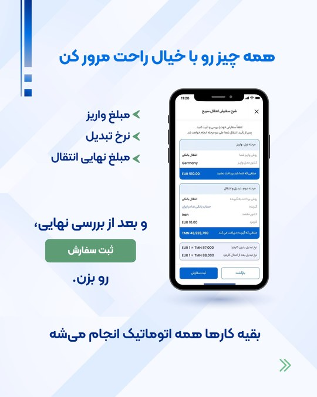
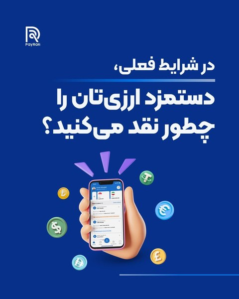
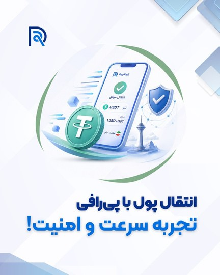
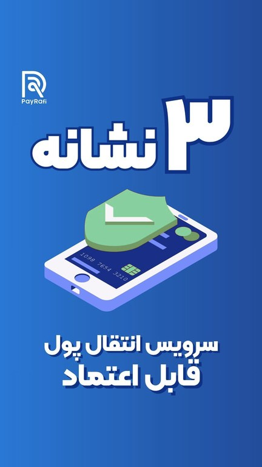
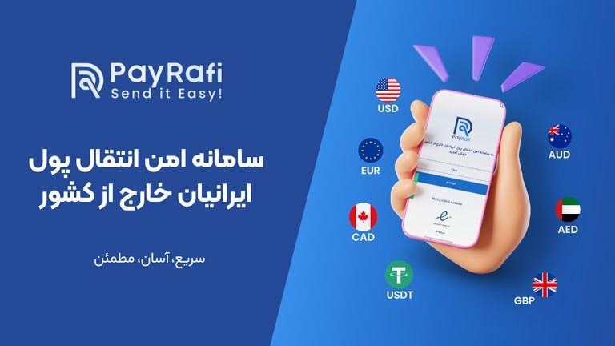
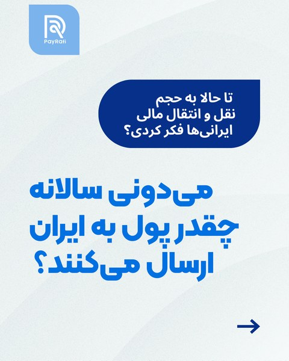
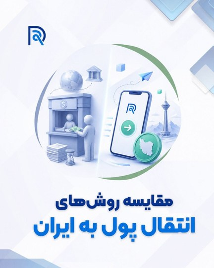
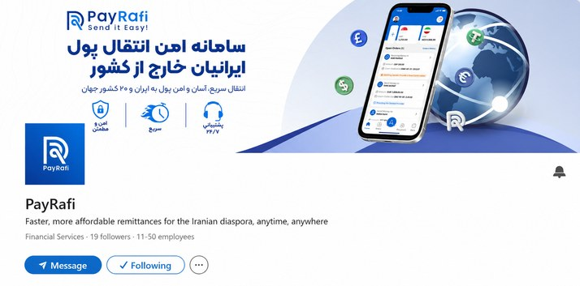